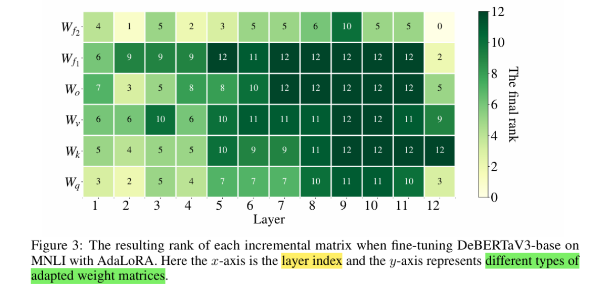

AdaLora
随着大规模语言模型的不断壮大，如何在有限资源下高效微调模型，成为研究热点。 传统 LoRA 固定低秩大小，难以兼顾所有层的复杂性和任务需求。 AdaLoRA（Adaptive LoRA）创新地引入动态调整秩的机制，根据层的重要性和训练过程自动分配参数 资源，提升微调效果和效率。
一、背景与挑战
LoRA 通过低秩矩阵分解实现参数高效微调，显著降低训练成本。 但其固定秩 r 设计对所有层一视同仁，无法针对不同层和任务灵活调整参数预算。 这带来两大问题：
-
资源浪费：部分简单层过度分配参数；
-
性能瓶颈：复杂层参数不足，限制模型表达能力。
因此，动态、按需分配秩大小的需求日益凸显。
二、AdaLoRA 的核心技术原理
AdaLoRA 通过引入 动态秩调整机制，实现训练中对各层低秩参数的自适应分配。 具体来说，AdaLoRA采用奇异值分解（SVD）对增量矩阵进行参数化，利用重要性指标剪枝低影响的 奇异值，同时保留奇异向量。由于完整SVD计算代价极高，该方法通过降低参数预算来加快计算过程， 并保持后续恢复的可能性，保证训练稳定。 此外，为了避免繁重的SVD计算，AdaLoRA在训练损失中加入正交性约束，规范奇异矩阵 P和 Q，从而 简化训练过程，提升模型稳定性。
核心思想
-
训练过程中监控各层低秩矩阵的重要性指标（如梯度、权重幅度等）；
-
根据指标自动调整每层秩大小，释放更多参数到关键层，减少不重要层参数；
-
通过稀疏化约束和正则化保证秩调整的稳定与收敛。
技术流程
-
初始化各层低秩矩阵，秩大小设置为最大值；
-
训练过程中动态调整秩，剪枝不重要的秩通道；
-
定期评估并重分配秩大小，实现参数预算的最优分配；
-
训练结束时，获得各层最优秩配置。
这样，模型能够在有限参数预算下，发挥最大潜力。
三、AdaLoRA 的优势与适用场景

-
提升参数利用率：动态分配避免参数浪费，增强模型表达能力。
-
• 适应复杂多变任务：不同任务对模型层需求差异大，AdaLoRA 能自动调节适应多任务训练。
-
• 减小显存占用：通过剪枝无用秩通道，降低显存和计算负担。
-
兼容主流微调框架：可与 PEFT、QLoRA 等结合，扩展微调技术栈。
-
适用场景包括：
-
资源受限但需高性能模型的微调任务；
-
多任务、多领域模型训练；
-
需要自动参数调节的复杂训练环境。